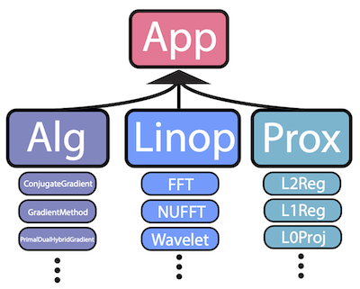

mridata.orgwith Gaby Nahum, Shahab Amin, Shreyas Vasanawala, and Miki Lustigmridata.org is an open platform for researchers to share MRI raw k-space datasets. |
|
SigPywith Chris Sandino, Sri Koundinyan, Ke Wang, and Miki LustigSigPy is a CPU/GPU Python package for signal processing, with emphasis on iterative methods. |
 |